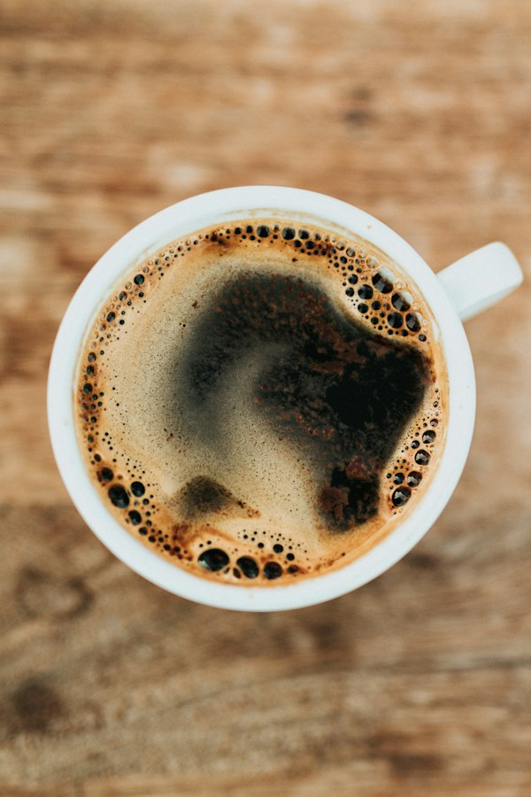

Ruang santai &
cita rasa otentik Makassar.
Kopi susu racikan warkop, indomie gurih, dan pisang goreng sambel. Tempat yang pas untuk nugas, rapat kecil, atau sekadar menunda pulang.


Bukan sekadar tempat ngopi.
Berakar dari kultur warung kopi Makassar — tempat orang datang tanpa janji, duduk berlama-lama, dan pulang dengan satu masalah yang selesai.
Top of Mind
Casual Creative Space
Yang pertama terlintas saat orang mencari tempat kreatif untuk berkumpul, bekerja, atau bertukar ide di Makassar.
Model Bisnis Terbukti
Health & Growth
Usaha yang sehat secara finansial dan operasional, tumbuh terukur bersama komunitas pelanggan setianya.
Visi
Ruang Kreatif Kasual
Menjadi ruang kreatif kasual paling diingat — inklusif, ramah kantong, dan konsisten dari hari ke hari.
Yang bikin betah lama.
Wi-Fi kencang
Stabil untuk nugas, kerja remote, atau sekadar scrolling.
Stopkontak di meja
Hampir setiap meja punya colokan. Baterai aman.
Area smoking
Sirkulasi terbuka khas warkop Makassar.
Buka sampai 24.00
Dari kopi pembuka pagi sampai obrolan tengah malam.
Parkir luas
Motor dan mobil, langsung di Jl. Anggrek Raya.
Titik temu komunitas
Mahasiswa, pekerja kreatif, dan warga lokal.
Yang paling sering dipesan.
Kopi Susu
Rp 15.000Creamy, legit, racikan warkop
Khas MakassarPisang Goreng Sambel
Rp 19.000Renyah, dicocol sambal terasi
 Favorit
FavoritIndomie Goreng
Rp 17.000Gurih, porsi pas buat begadang
40+ item: kopi, teh, mie, camilan, sampai roasted bean Toraja. Pesan langsung, bayar di kasir.
Buka katalogPunya acara? Pakai tempat kami.
Warkop Indonesia rutin jadi ruang pameran lukisan, workshop kecil, dan gathering komunitas. Ajukan tanggalmu, kami cek ketersediaan.
Mampir ke Warkop Indonesia.
Buka setiap hari termasuk libur nasional
Indikator jam ramai
Estimasi kepadatan berdasarkan jam operasional